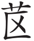

韩愈
愈与李贺书[1]，劝贺举进士[2]。贺举进士有名[3]，与贺争名者毁之，曰贺父名晋肃，贺不举进士为是，劝之举者为非。听者不察也，和而倡之，同然一辞。皇甫湜曰[4]：“若不明白，子与贺且得罪。”愈曰：“然。”
律曰[5]：“二名不偏讳[6]。”释之者曰：“谓若言‘徵’不称‘在’，言‘在’不称‘徵’是也[7]。”律曰：“不讳嫌名。”释之者曰：“谓若‘禹’与‘雨’、‘丘’与‘’之类是也[8]。”今贺父名晋肃，贺举进士，为犯二名律乎？为犯嫌名律乎？父名晋肃，子不得举进士，若父名仁，子不得为人乎？夫讳始于何时？作法制以教天下者，非周公孔子欤？周公作诗不讳[9]，孔子不偏讳二名，《春秋》不讥不讳嫌名[10]，康王钊之孙，实为昭王[11]。曾参之父名晳，曾子不讳昔[12]。周之时有骐期[13]，汉之时有杜度[14]，此其子宜如何讳？将讳其嫌遂讳其姓乎？将不讳其嫌者乎？汉讳武帝名彻为通[15]，不闻又讳车辙之辙为某字也；讳吕后名雉为野鸡[16]，不闻又讳治天下之治为某字也。今上章及诏，不闻讳浒、势、秉、机也[17]。惟宦官宫妾，乃不敢言谕及机[18]，以为触犯。士君子言语行事[19]，宜何所法守也？今考之于经，质之于律，稽之以国家之典[20]，贺举进士为可邪？为不可邪？
凡事父母，得如曾参，可以无讥矣；作人得如周公孔子，亦可以止矣[21]。今世之士，不务行曾参周公孔子之行[22]，而讳亲之名，则务胜于曾参周公孔子，亦见其惑也。夫周公孔子曾参卒不可胜，胜周公孔子曾参，乃比于宦者宫妾，则是宦者宫妾之孝于其亲，贤于周公孔子曾参者邪！
[1]李贺（790—816）：字长吉，唐代著名诗人。
[2]进士：唐代科举考试中最受重视的科目。
[3]有名：指举人名单中有其姓名。
[4]皇甫湜：字持正，元和年间（806—820）进士。曾从韩愈学。
[5]律：此处当指唐代某项法律条文。
[6]二名不偏讳：最早见于《礼记》的《典礼上》及《檀弓下》，意为二字之名在用到其中某一字时不避讳。
[7]见《礼记·檀弓》。
[8]不讳嫌名：此句亦袭用《礼记·曲礼上》郑玄注。禹、雨，丘、，都是同音字。禹即夏禹，丘为孔子名。指与名字中所用字音相近的字。音近则有称名之嫌，所以叫嫌名。
[9]周公：西周初年政治家，名姬旦，周武王的弟弟，助武王灭殷商，又辅佐周成王和康王。《诗经·周颂》中的《噫嘻》与《雝》等篇，相传为周公所作，其中有“克昌厥后”“骏发尔私”等句，而周公之父文王名昌，周公之兄武王名发，所以说“周公作诗不讳”。
[10]《春秋》：春秋时鲁国编年史书，相传经孔子删订，为儒家经典之一。讥：讥刺，非难。
[11]康王：周康王名钊，其孙继位，谥昭。《春秋》对此未提出异议。
[12]曾参（shēn）：孔子弟子，以孝行著称。不讳昔：《论语·泰伯》记曾子说：“昔者吾友尝从事于斯矣。”
[13]骐期：春秋时楚国人。
[14]杜度：东汉时人，字伯度，工草书。
[15]汉讳武帝：汉武帝名刘彻，当时为避讳，将彻侯改为通侯，蒯（kuǎi）彻改为蒯通。
[16]吕后：名雉（zhì），当时为避讳，改雉为“野鸡”。
[17]浒（hǔ）、势、秉、机：四字与唐高祖李渊之父（名虎）、太宗李世民、世祖李、玄宗李隆基名同音。
[18]谕：与代宗李豫的名字同音。
[19]士君子：指官僚及其他有社会地位的乡绅、读书人等。
[20]稽：检核。国家之典：指上文所举汉代讳武帝、吕后名，唐朝章奏、诏令不避“浒势秉机”等例。
[21]止：意为到达顶点。
[22]务行：致力于实行。
【译文】
我给李贺写信，勉励他去考进士。李贺应进士试名单已经报上且引人注目，同李贺争名的人出来诋毁他，说李贺的父亲名叫晋肃，李贺还是以不参加进士考试为好，勉励他去考的人是不对的。听到这种议论的人不加分辨，纷纷附和，众口一声。皇甫湜对我说：“如果不辩明这件事，您和李贺都会因此获罪。”我回答说：“是的。”
《律》文说：“凡双名不专讳一个字。”解释者说：“孔子的母亲名‘徵在’，孔子在说‘徵’的时候不说‘在’，说‘在’的时候不说‘徵’。”《律》文又说：“不讳声音相近的字。”解释者说：“譬如‘禹’之与‘雨’，‘丘’之与‘’之类就是。”现在李贺的父亲名叫晋肃，李贺去考进士，是违背了二名律呢，还是违背了嫌名律呢？父名晋肃，儿子不可以考进士，那么倘若父亲名仁，儿子就不能做人了吗？试问避讳是从什么时候开始的呢？制定礼法制度来教化天下的，不是周公、孔子吗？而周公作诗不避讳，孔子不避母亲双名中的单独一字，《春秋》中对人名相近不避讳的事例，也没有加以讥刺。周康王钊的孙子，谥号是昭王。曾参的父亲名晳，曾子不避“昔”字。周朝时有一个人叫骐期，汉朝时有一个人叫杜度，像这样的名字让他们的儿子如何避讳呢？难道为了要避父名的近音字，就连他们的姓也避了吗？还是就不避近音字了呢？汉代讳武帝名彻，遇到“彻”字就改为“通”字，但没有听说又讳车辙的辙字为别的什么字；讳吕后名雉，遇到“雉”字就改称“野鸡”，但没有听说又讳治天下的治字为别的什么字。现在臣僚上送奏章、皇帝下达诏旨，也没听说要避浒、势、秉、机这些字，只有宦官和宫女，才不敢说谕和机这些字，以为这样是犯忌的。士大夫的言论行动，究竟应该依照什么法度呢？总之，无论是考据经典、质正律文还是查核国家典章，李贺的参加进士考试，到底是可以还是不可以呢？
大凡服侍父母能像曾参那样，就可以免遭非议了；做人能像周公孔子，也可以达到顶点了。而现在的读书人，不努力学周公、孔子的行事，却要在讳亲人的名字上，去超越周公、孔子，真是太糊涂了。周公、孔子、曾参，毕竟是无法超过的，超越周公、孔子、曾参，而去向宦官、宫女看齐，那么岂非宦官、宫女对亲人的孝顺，比周公、孔子、曾参还要好得多了吗？
【评析】
封建时代避讳要求很严格，违犯者会招致非议，甚或得罪。韩愈鼓励李贺考进士，但因他父名晋肃而遭到非议。韩愈也被人指责，《讳辩》就是专门针对此事而写的驳论。韩愈巧妙地引用经典和法律依据，找出矛盾，从而反对将避讳搞得过滥。明确指出，李贺考进士不犯二名讳和嫌名讳，“父名晋肃，子不得举进士，若父名仁，子不得为人乎”反驳有力。文章层层设问，一波三折，“前分律经典三段，后尾抱前，婉鬯显快。反反复复，如大海回风，一波未平，一波复起”（吴楚材、吴调侯评语）。语言辛辣，说理痛快，理足气盛。